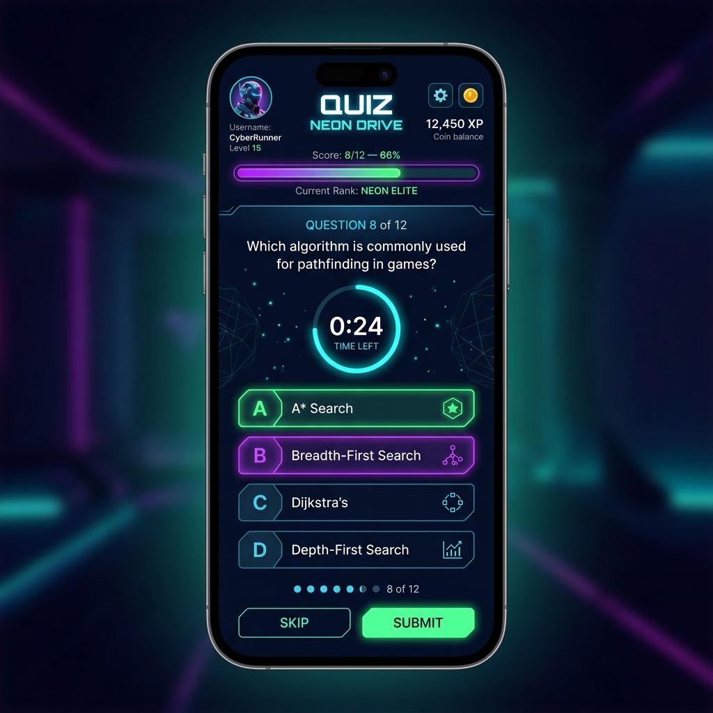
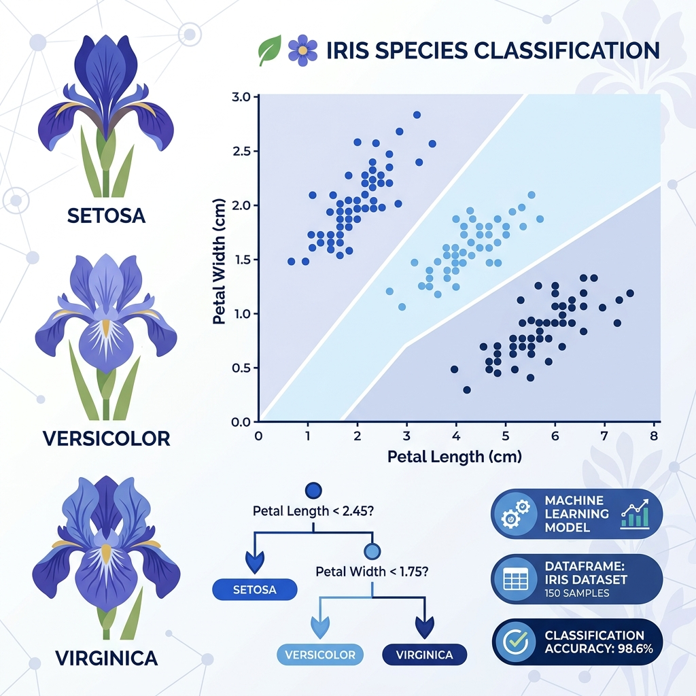

Chandrika Nandehariya Python Developer
|
IT Engineering Student passionate about Artificial Intelligence, Machine Learning, Python Development, and Data Science.
IT Engineering Student
I am a dedicated IT Engineering Student with a passion for building intelligent, data-driven systems and software engineering.
I am deeply interested in Artificial Intelligence, Machine Learning, Python Development, and Data Analytics. My academic coursework and hands-on projects focus on developing efficient data structures, modeling predictive algorithms, and designing clean statistical visualization pipelines.
My developmental philosophy is centered on solving real-world problems through technology. I focus on writing high-quality, reusable, and modular Python code that optimizes prediction results, handles robust data preprocessing, and scales effectively.
I am a continuous learner with hands-on project experience. My academic achievements, including maintaining a strong 8.40 SPI/CPI at GTU, are complemented by practical applications of algorithms to solve real-world problems.
IT Engineering
Undergraduate student at GTU. Ranking in the top 5% of semester cohort with academic honors.
AI & ML Interests
Specialized focus on supervised classifiers, regressors, NLP workflows, and tf-idf models.
Real-world Problem Solving
Engineering complete computational pipelines from exploratory analysis to streamable user interfaces.
Technical Skillset
Programming Languages
Machine Learning
Tools
Featured Projects
Rock vs Mine Prediction
Developed a Machine Learning model that predicts whether an underwater object is a Rock or a Mine using SONAR signal data. Performed data preprocessing, model training, testing, and prediction using Scikit-Learn.
- Processed 60 channels of acoustic sonar return frequency data.
- Configured feature scaling and binary label mapping pipelines.
- Trained Logistic Regression model with robust validation accuracy.
House Price Prediction
Built a Machine Learning model to estimate house prices using property features. Applied data preprocessing, feature analysis, training, and prediction techniques.
- Conducted multi-variable correlation checks and outlier removal.
- Applied label encoding to categorical structural attributes.
- Trained Random Forest Regressors, tuning hyperparameters via search grids.

Fake News Prediction
Created an NLP-based machine learning model that classifies news articles as Real or Fake using TF-IDF vectorization and classification algorithms.
- Parsed unstructured content removing non-alphabetical indicators.
- Transformed text tokens using TF-IDF term frequency vectorizers.
- Implemented Passive Aggressive and Logistic models.

AI Career Counseling System
Designed an AI-powered career guidance platform that recommends suitable career paths based on student interests, skills, education, and goals.
- Structured user profile assessment forms via Streamlit interfaces.
- Mapped interest vectors to high-demand engineering skill graphs.
- Implemented cosine similarity mapping for personalized suggestions.
Student Performance Predictor
Developed a predictive analytics model that forecasts student academic performance using study-related and academic factors.
- Handled linear/ridge regression pipelines predicting exam grades.
- Plotted residual distribution curves checking mathematical variance.
- Explored performance correlations mapping study hours against GPA scores.
Professional Certifications
Python Programming
Coursera / Authorized ProviderCovers advanced OOP, file processing, data structures, and PEP 8 guidelines implementation.
ID: PY-849201-GTUMachine Learning Fundamentals
Kaggle / Stanford OnlineThorough training on regression, classification clustering, validation techniques, and scikit-learn models.
ID: ML-392014-KAGData Science Basics
Google Career CertificatesFocuses on statistical modeling, EDA using Pandas/NumPy, data cleaning, and visual reporting techniques.
ID: DS-583021-GGLAI Fundamentals
Microsoft Learn / Azure AICovers natural language processing, ITvision algorithms, and AI safety principles.
ID: AI-910283-MSFAcademic Background
Bachelor of Engineering in IT Engineering
Gujarat Technological University (GTU)
Core engineering curriculum focusing on Advanced Programming Paradigms, Computational Mathematics, Database Systems (SQL), Operating Systems, and Machine Learning.
GitHub Showcase
Chandrika Nandehariya
github.com/chandrika018ITEngineering Student | AI & Machine Learning Enthusiast | Python Developer
Professional Coding Journey
Foundation & Core Programming
Developed strong computational structures using Java and SQL at GTU. Modeled relational databases and optimized algorithmic runtime complexity.
Python Specialization & Exploratory Analysis
Transitioned to advanced Python programming. Built automated data clearing, manipulation, and statistical distribution graphs using NumPy, Pandas, and Matplotlib.
Machine Learning & NLP Pipelines
Trained classifiers, regressors, and natural language networks. Developed the Sonar Rock/Mine predictive system and text categorization model.
AI System Deployment & Streamlit Interfaces
Engineered full-stack interactive AI interfaces (Streamlit Career Counseling). Implementing validation pipelines, and actively committing open-source work.
Featured Repositories
End-to-end Machine Learning pipeline parsing student records and performing Regression analysis using Scikit-Learn.
AI binary classification model predicting Rock or Mine material signatures using acoustic Sonar return readings.
Designed an AI-powered career guidance platform recommending suitable paths based on student inputs and interests.
Created an NLP-based machine learning model that classifies news articles as Real or Fake using TF-IDF.
Let's Work Together
Contact Details
I am currently actively seeking Python developer and Machine Learning internships. Reach out via email, phone, or professional handles to start a conversation!